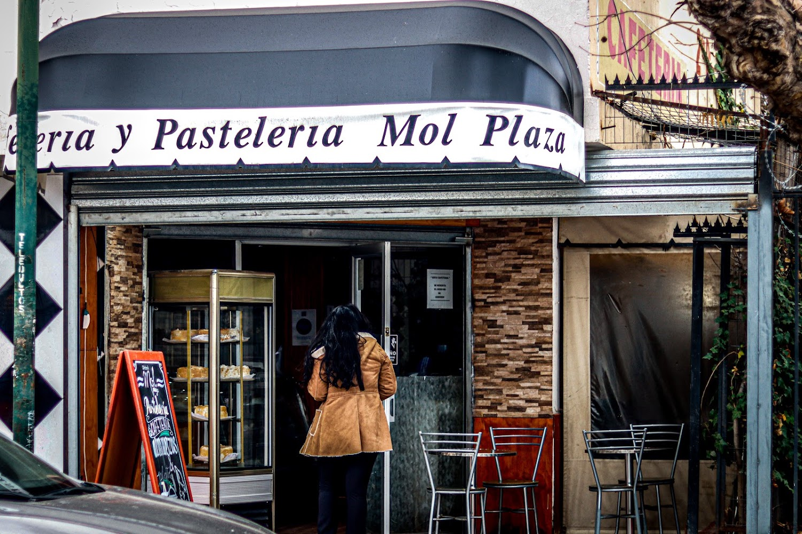
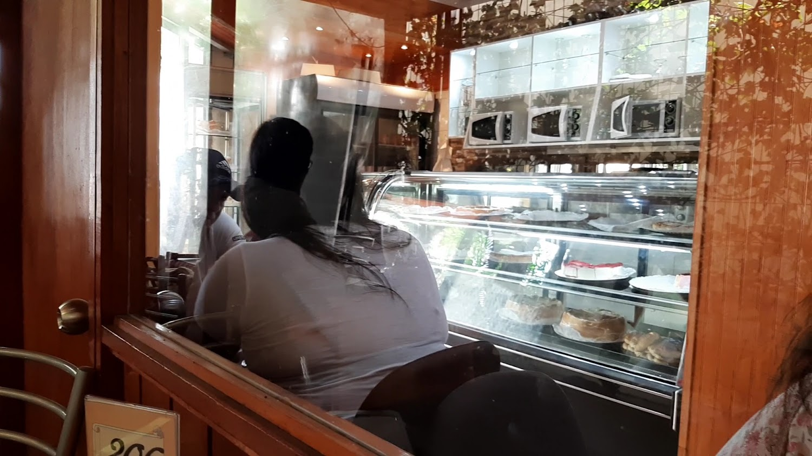
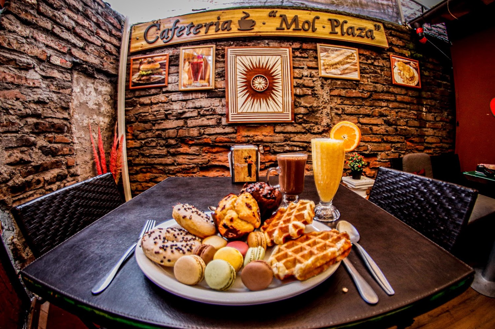
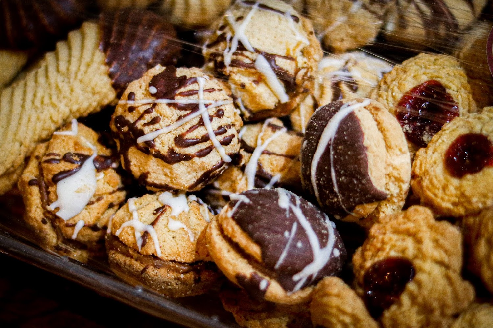

Platos de fondo
Lomo a lo pobre, churrasco italiano y salmón a lo pobre son los tres platos que su propio menú de Google destaca.

Cafetería y pastelería · San Bernardo
Almuerzos caseros, sándwiches y repostería propia en Arturo Prat 648, con patio interior al fondo. Abierta desde hace años en pleno San Bernardo.
Lomo a lo pobre, churrasco italiano y salmón a lo pobre son los tres platos que su propio menú de Google destaca.
La torta de tres leches es de lo más nombrado en sus 303 opiniones, junto con los sándwiches.
Al fondo hay un patio con fuentes de agua donde a veces se hacen eventos — lo cuenta una reseña real del local.
Mol Plaza es cafetería y pastelería a la vez, de esas de barrio que abren temprano y sirven de todo: desayuno, almuerzo y once.
Una de sus reseñas lo resume mejor que cualquier eslogan: "uno de esos negocios típicos chilenos que cada vez quedan menos, un rincón que recuerda que San Bernardo alguna vez fue la primera ciudad saliendo de Santiago al sur". Con 303 opiniones es de las cafeterías más conocidas de la comuna.



Arma tu pedido y consúltanos. Según el dato que Google recoge de 19 clientes, el gasto promedio va entre $5.000 y $10.000 por persona.
"Cafetería Mol Plaza tiene un amplio espacio, bien ventilado, agradable. En el fondo hay una especie de patio interior donde eventualmente se realizan eventos, hay fuentes de agua, por tanto es constante el sonido."
"Uno de esos negocios típicos chilenos que cada vez quedan menos. Un rincón que recuerda que San Bernardo alguna vez fue la primera ciudad saliendo de Santiago al sur. La atención, muy cordial."
—